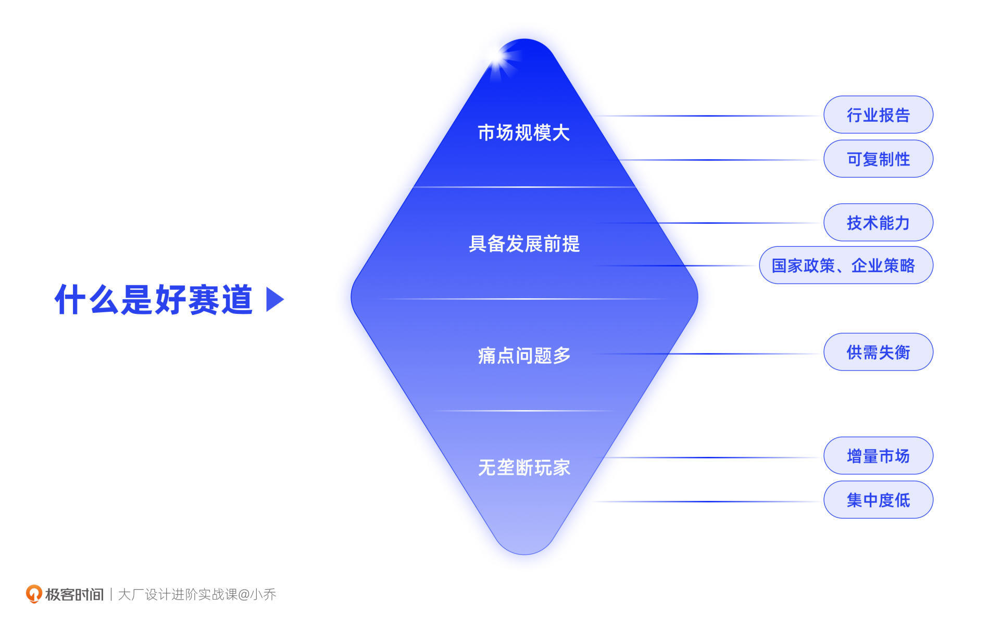
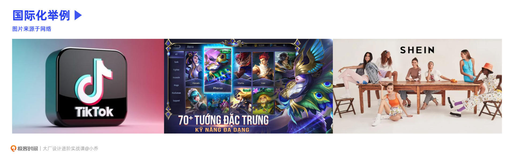
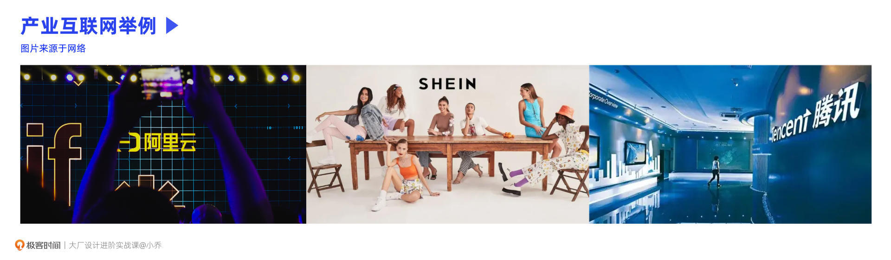
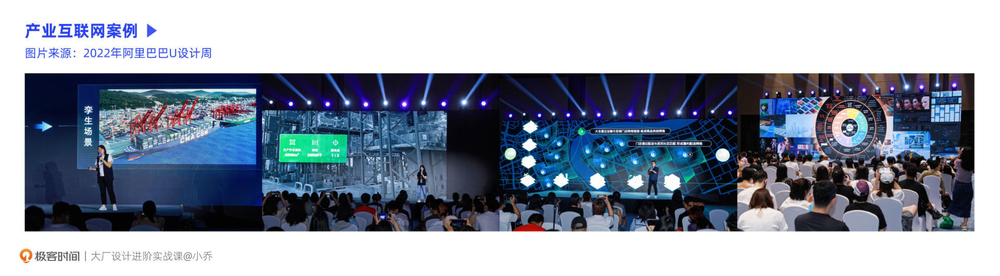
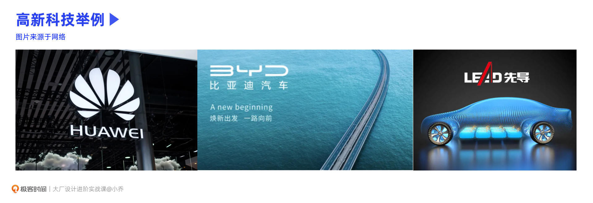
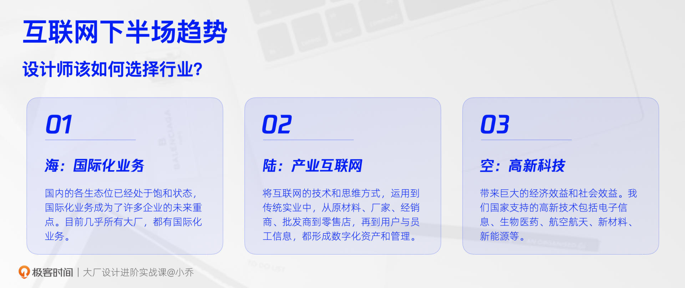
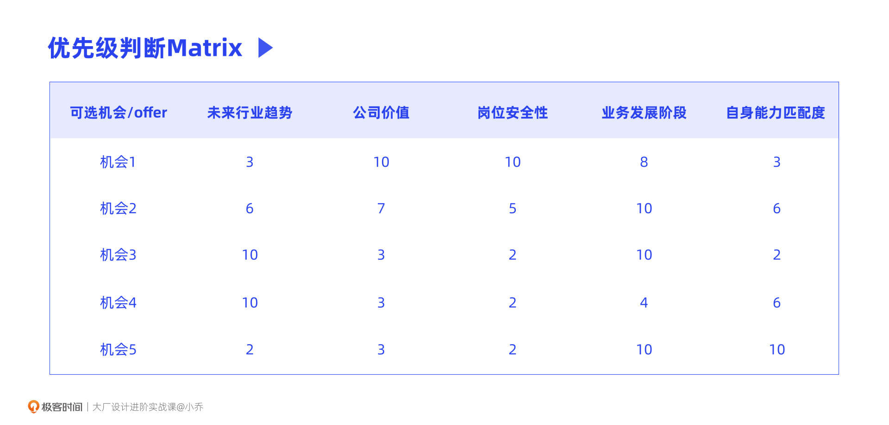
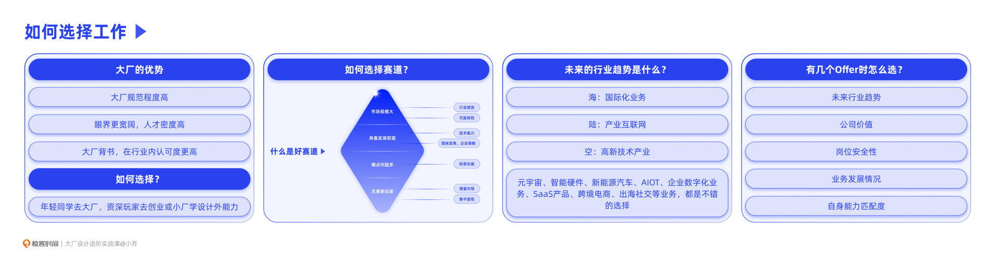

- 00 开篇词 升维思考，是设计师有效成长的第一步.md.html
- 01 业务周期：0-1-10-100-N的发展策略.md.html
- 02 商战模式：如何在商业竞争下突出重围？.md.html
- 03 市场洞察：如何找寻差异化撬动支点？.md.html
- 04 用户洞察：不懂用研的设计师不是好职场人.md.html
- 05 用户画像：是形式主义还是真的有效？.md.html
- 06 用户旅程：挖掘不同用户的核心机会点.md.html
- 07 职场晋升：看懂晋升的“游戏规则”.md.html
- 08 设计价值升级：五层进阶突破成长.md.html
- 09 基础价值 核心三原力：如何将需求转化为设计稿？.md.html
- 10 基础价值 第一性原理：从问题本质解决问题.md.html
- 11 基础价值 设计复盘：只是量化设计结果吗？.md.html
- 12 二级价值 负向网兜：如何全面发现负向问题？.md.html
- 13 二级价值 设计自驱：如何做好项目Owner？.md.html
- 14 二级价值 自驱合作：如何反内卷处理合作关系？.md.html
- 15 三级价值 增长误区：思维惯性陷阱和虚荣数据.md.html
- 16 三级价值 用户增长历程：AARRR是万能的吗？.md.html
- 17 三级价值 产品增长：如何做好产品创新？.md.html
- 18 三级价值 运营增长：如何自驱营销活动和投放？.md.html
- 19 三级价值 品牌增长 抢占心智，赢得人心红利.md.html
- 20 三级价值 增长实操：如何“步步为营”推动落地？.md.html
- 21 四级价值 L型赋能：让T型人才发挥更大价值.md.html
- 22 四级价值 “网状对比”解决共性痛点.md.html
- 23 五级价值 商业画布：设计师可以担任业务方吗？.md.html
- 24 五级价值 共创洞察：如何做好一次完善的workshop？.md.html
- 25 五级价值 领导力觉醒：写给新晋管理者.md.html
- 26 工作选择（上）：2B or 2C设计师？如何规划领域？.md.html
- 27 工作选择（下）：大厂 or 小厂？如何选择赛道？.md.html
- 28 人才地图：认知自我，成为高潜力人才.md.html
- 29 成长历程：如何从设计小白成长为团队负责人？.md.html
- 30 冰山模型：如何成为让面试官欣赏的“面霸”？.md.html
- 31 作品集指导：什么是面试官喜欢的作品集？.md.html
- 用户故事 什么是职场设计师进阶的正确姿势？.md.html
- 结束语 突破自我，成人达己.md.html
- 捐赠
27 工作选择（下）：大厂 or 小厂？如何选择赛道？
你好，我是小乔。
我们在上节课一起了解了2B和2C业务的差异，以及如何根据我们的个人目标来选择业务。相信你之后的选择，也不会再仅限于2B和2C这个维度的考量了。
这节课，我们将一起探讨如何选择企业和赛道。当我们在工作中遇到问题时，是该跳槽还是留下？如果想要获得更有效的成长，又该去怎样的企业呢？行业的趋势在不断变化，未来10年我们又该如何规划赛道？
大厂和小厂谁更香？
不管是设计师还是产品经理、运营，随着近两年大厂裁员的消息频发，有许多同学就会讨论大厂还值不值得去。
对于年轻设计师来说
其实对于年轻设计师来说，该讨论的问题并不是“大厂值不值得去”，而是行业紧缩，大厂要求提升，你是否还去得了。对于已经在大厂的同学，思考的问题也是我们是否能紧跟团队要求，并且要能做出正确的业务选择，否则也有被淘汰的风险。
如果你一直都在小公司，有机会的话一定要去大厂走一圈，因为大厂有着小厂难以替代的优势。
- 首先，大厂规范程度高。在人员结构、平台优势、办事流程、薪酬结构等方面，大厂都更为标准和完备；
- 第二，在大厂眼界会更宽阔，主要体现在公司的人才密度和业务布局上。周围的正向环境，往往比独自闷头努力的效果更好。有些小厂的设计师，对自己的作品集很满意，觉得自己项目已经完成得很好了，但可能对大厂的同学来说，会觉得项目复杂度低，反映的能力也并不亮眼；
- 第三，大厂经验在行业内的认可度更高，对我们的履历更有帮助。我们在之前的课程中提到过供需关系，因为大厂的人才密度相对较高，所以在招聘时，公司的话语权往往会更大。高级别的同学从小厂去大厂可能会降薪，但从大厂去小厂往往是涨薪。
对于大厂经验丰富的设计师来说
对于已经有多年丰富的大厂经验，摸爬滚打8年以上，想要拓展新能力、转换新角色的职场老鸟来说，去增长势头显著的小企业，是十分不错的选择。
我有许多大厂的前同事，在大厂时是腿部管理者或腰部管理者，去小厂成为了高管或合伙人，突破了自己原本在商业和认知上的天花板。这就是一种在专业方面做降维打击，在商业方面做升维认知的选择。
原本在大厂，要分几个部门、分好几个人共同完成的事情，在小厂可能会由你独自包揽，一个人顶好几个职能角色用。小厂会充分体现能者多劳的情况，也能让能者更强。
以我在某中小厂的经历来看，我们的许多自驱项目，除了设计师的常规工作以外，也涉及到许多采购、商务、运营、产品会做的事情，比如AR项目、智能影像中台项目的业务规划就是我制定的；在全世界范围内找寻高质量的AR供应商，也是我们设计师去谈的。
我们曾在业务周期的课程中讲过，脉脉在2022年的人才流动调研中显示，工作10年以上的设计师更愿意去创业公司或者大厂中的创业团队，因为可以突破职能限制，获得更好的成长和回报。
该如何选择业务赛道？
有许多被裁员的设计师，并不是因为能力不好，仅仅是因为业务整体裁撤，才不幸被列入了名单中。上到部门的设计总监、资深设计专家，下到刚工作的应届毕业生。而一旦被裁员，想再找到和之前平级平薪的工作，又十分困难。因为处于离职状态的候选人很被动，企业具备更高的话语权。
不管是设计师，还是运营、产品、技术等其他职能的同学，对行业变革的敏感度和行业趋势的判断力，都高度影响我们的职业发展历程。
什么是好的赛道？
那什么是好的赛道呢？不管时代如何变迁，我们都可以从这4个方面去评判：
好赛道 = 市场规模大 + 具备发展前提 + 痛点问题多 + 无垄断玩家

市场规模大：
计算市场规模，对于设计师来说比较枯燥，如果真的在课程里面讲计算推导逻辑，恐怕会让许多设计同学望而却步。毕竟我们不是投资人，不用计算业务的长期性和赚大钱的潜力。所以，最简单的方式就是查找咨询公司的行业报告，这对咨询行业来说是基础技能。
同时，我们也可以看看你选择的业务是否有可复制性，比如日本的寿司之神，虽然店铺和品牌十分优秀，但因为无法规模化，所以体量有限。
具备发展前提：
发展前提有两方面，第一方面是技术能力层面。我们都知道一句话叫作“前浪死在沙滩上”，如果条件不具备，就会变成给后人铺路的炮灰。
小米为什么要在2010年开始做手机？因为供应链、生产设备、电子零件等方面，都具备了可行条件。为什么近两年云产品突然兴旺？因为数据储备、5G、AI、云计算等能力具备了条件。
第二方面是政策方面，包括国家政策和企业策略。比如人尽皆知的教育赛道，在“双减”后遭遇重击。再比如，俞敏洪老师的东方甄选为什么可以火爆？有许多人说是因为差异化，别的直播间不讲英语，他们讲英语。但他们在前半年不管如何讲英语都没有出圈，直播间连10个人都不到。
东方甄选爆火有5个原因：
- 时运：四大直播带货天王逐个退网，给了其他直播间机会；
- 抖音策略：直播带货升级，从低价策略升级为内容/场景直播；
- 国家政策：国家大力扶持三农赛道，达成共同富裕目标；
- 降维打击：新东方作为国内顶级培训巨头，将高门槛的英语、百科、哲理等培训内容渗透在直播中，与其他直播间形成差异化；
- 蛰伏能力：俞敏洪老师的蛰伏能力令人敬佩，坚持做对的事情，等风来。
我们可以看到，前3条代表的是政策与时运，4、5两条代表的是产品和团队竞争力，只有优先符合政策，好好做产品才有成功的机会。
痛点问题多：
不管是2B还是2C，或是其他方向的产品，市场上都需要反映出这个赛道的供需失衡，这才是一个值得去的赛道。为什么Google做VR、AR那么久，在2012年就发布了Google Glass，但后来却停产了呢？早在我留学的时候，就在学校试用过，当时的感受就是新奇但无用。因为用户需求在当时并不旺盛，没有体现出供需失衡，当然技术也并不完备。
无垄断玩家：
我们在之前的课程中讲过行业选择和生态位。当一个生态位已经有几个头部玩家后，再入局这个赛道就会很难，除非有强大的差异化壁垒。当CR5（行业业务规模前5名的公司）的渗透率超过50%，通常就较难入局了。往往增量市场要比存量市场更值得投入，行业集中度过高，就需要谨慎选择，因为集中度代表着垄断和定价权。
比如我们之前讲过的江小白案例和小罐茶案例，都是在细分领域集中度较疏、没有响亮品牌时入局的。
未来的行业趋势是什么？
在2010年之前，互联网行业处于PC互联网时代，当时出现了新浪、百度、搜狐等巨头；从2010年到2020年，互联网行业发展到移动互联网时代，诞生了京东、淘宝等巨头，以消费行业为主。我们可以发现，在行业的发展演变中，没有谁是常胜将军。
没有英雄的时代，只有时代的英雄。
那我们现在处于什么互联网时代呢？从2020年起，就进入了产业互联网、出海和高新科技的时代。虽然有些业务在衰落，但这三大领域正在蓬勃发展。如果未来5-10年，仍然想要在互联网行业发展，我们就需要逐渐将赛道向这三大领域倾斜，分别是“海”“陆”“空”。
海——国际化业务
“海”是指出海业务，因为国内的各生态位已经处于饱和状态，国际化业务成为了许多企业的未来重点。目前几乎所有大厂，都有国际化业务。
也许你会疑惑，为什么海外业务就只听说过TikTok呢？因为出海业务并不方便公开。一方面是防止竞争对手加入，更重要的是，出海业务受到国际关系影响。我所在的企业就经历过业务被目标市场国家禁止的情况，造成了巨大损失，因此不暴露产品背后是哪个国家的企业才是最明智的。
其实，早已有许多大厂的国际化App月活几千万，闷声发大财。比起国内产品，国际业务还有不少生态位空缺，有许多可以入局的赛道。在目标市场应该入局哪个赛道合适呢？每个国家的情况不同，具体方法我们曾在市场洞察一课中学习过。

陆——产业互联网
“陆”是指产业互联网，因为是对传统行业的互联网改造，更有地面感，因此我称为“陆”。
简单来说，产业互联网就是将互联网的技术和思维方式，运用和赋能到传统实业中，从原材料、厂家、经销商、批发商到零售店，再到用户与员工的信息，都形成数字化资产和管理。比如智慧农业、智能制造、智慧工厂等，以及为传统公司提供企业数字化SaaS服务，都是不错的选择。5G、AI、区块链、云计算、大数据技术为产业互联网提供了前提。
元气森林和SHEIN都是将互联网的思维方法运用在传统实业中，从而取得了成功。SHEIN通过小量测试的方式，得出哪个款式在哪个国家销量好，从而规划出不同国家的服装款式和数量，减少库存积压，降低成本。目前SHEIN是美国下载量最大的App，超过了Amazon、Instagram、Twitter等巨头，也在2022年首次超越TikTok位居第一。

当我参加阿里巴巴举办的2022年U设计周时，再次印证了近几年的核心命题就是产业互联网。本次大会分享了许多传统行业的数字化产品，有给物流行业的智能设计，有给船舶行业的数字化管理系统等等。

空——高新技术产业
“空”是指高新技术产业，比如新能源、芯片、VR等，因为高精尖，因此我将其称为“空”。
这类产业开发难度和门槛极高，一旦开发成功，会带来巨大的经济效益和社会效益。我们国家支持的高新技术包括电子信息、生物医药、航空航天、新材料、新能源等。高新技术产业的发达，将意味着我们不再会被扼住喉咙，可以自强不息。

阿里巴巴在2020年成立的商品设计孵化中心，简称ADIC，目前就在研究各种新材料的可能性，节能减碳，让商品更为绿色环保，积极响应国家的“双碳”政策。
你可以看看自己目前所处的行业赛道，是否在这三个领域之中呢？如果未来10年想要长期在互联网行业发展，就可以提前做好准备，向这3个方向倾斜。在这3个方向中，元宇宙、智慧农业、新能源汽车、AIOT、传统行业数字化、SaaS产品、跨境电商、出海社交等业务，都是不错的选择。

有好几个offer时该怎么选？
最后，当我们已经确定赛道，甚至手上有好几个offer了，又该怎么选择呢？这是大家经常会问我的问题。还记得我们曾经讲过给项目排优先级的方法吗？这里也是同理，只是几个维度需要变化一下。
我建议从这5个维度来考虑：1. 未来行业趋势；2. 公司价值；3. 岗位安全性；4. 业务发展阶段；5. 自身能力匹配度。
未来行业趋势：
就是我们上文深度讲解的“海陆空”三大方向。在准备跳槽时，可以看看你手中的机会是否符合这三个方向。
公司价值：
就是看这个企业能带给你的价值。下一份工作并不是我们的终点，要考量企业对你的背书。不过，我鼓励年轻设计师去大厂看看，“卷”几年，对自己“狠”几年，软硬能力和眼界都会提升快一些。
我们曾讲过，成长速度很重要，有很多小厂设计师，辛苦工作了8、9年，但设计思维、眼界还停留在练手活和学软件的层面，竞争力就比不上那些手活好、设计策略思维也很强大的同学。
岗位安全性：
就是考虑业务被裁撤的风险。目前行业处于紧缩状态，业务一旦不达标就会裁撤，连同员工一起。
因此，我们也要问清楚面试官一些问题，比如：公司对于这个业务的态度是什么样的？业务负责人在企业中的地位怎么样？如果业务失败了要裁撤，员工如何处理？是否能转岗到其他业务？对于2B的SaaS业务，我们也要问清楚公司的ROI情况，通常要大于2才值得考虑。这些问题，我们也会在后续的面试课程中讲解。
业务发展情况：
我们之前讲过业务的整个生命周期，在这4个阶段中，增长期往往是最推荐去的。因为这说明业务做成了且蓬勃发展，各种资源、机会也会更为丰富，周围的人会更优秀，人才密度也会更高。但在这样的人才密度下，你自己也要能“卷”好斗，骁勇善战。如果业务处于引入期，就要看看稳定性，有些业务虽然增长缓慢，但是是企业的长期方向，也是国家鼓励的方向，那就可以选择。不建议去处于衰落期又没有第二增长曲线的业务。
自身能力匹配度：
我们在上节课一起探讨了，如何根据自己的职业目标和自己擅长的能力选择业务。自身能力匹配度，正是考察业务是否符合我们的成长目标和能力。通常建议大家选择比自己能力范畴略大的岗位，这样可以让我们有成长空间。
我之前公司的HRVP在做管理培训时讲过，招聘就像种萝卜，萝卜需要合适的坑。这个坑需要比萝卜稍大一些，这样它可以长大。如果坑比萝卜小，萝卜就无法成长了；如果坑比萝卜大太多，萝卜就会在坑里东倒西歪，最终难以存活。

针对以上这5个维度，我们只要在优先级matrix里面打上分，总分最高的offer就是对我们来说最好的选择。
最后，值得一提的是，对于年轻同学来说，主管给你的感受往往也是判断维度之一。在面试时，可以问清楚哪一位是自己未来的主管，很多时候，优秀的主管以及你们之间的合拍程度，是要比业务更为重要的。
跟着好leader，成长可以少走很多年的弯路。主管的很多行为观点，会长期影响我们的未来发展，当我们自己成为主管之后，你会发现，我们身上或多或少都有之前主管的影子。
我们在领导力一课中讲过，好的主管是常胜将军，对业务有强大的方向感，在部门中有话语权，可以帮助设计团队争取利益。同时，好的主管可以帮助我们链接解决问题的资源，清楚团队同学的长短板，并针对性地培养团队内的核心人才，提升整体团队的能力水平。
今日小结
今天，我们学习了大小厂的优势差异，对于年轻设计师来说，更建议去大厂卷一卷，对于已经有丰富的大厂经验的设计同学来说，可尝试蓬勃发展的小厂，拉伸设计以外的能力。
我们也充分学习了选择业务赛道的方法，可以根据好赛道公式来判断，好赛道 = 市场规模大 + 具备发展前提 + 痛点问题多 + 无垄断业务；也要根据未来行业趋势做判断，“海陆空”三大领域都值得我们长期投入，提前做好准备。
当我们面临多个机会选择时，可以用优先级matrix进行打分判断，5个判断维度分别是：未来行业趋势、公司价值、岗位安全性、业务发展阶段、自身能力匹配度。

也有许多同学问过我，如果目前能力还进不了大厂，在小厂和外包里该如何选择呢？
我的建议是尽量不去做外包设计师。因为能做的事情过于零碎，除了练习手活以外，是没有机会负责完整业务的，也很难跟踪业务结果。况且，如果真的很有设计价值，为什么甲方的设计师不自己做，要留给你做呢？我们在课程中多次强调，手活能力只是设计师的地板能力，在晋升规则一课中也讲过，向上晋升需要体系化思维。
所以，你可以想一想，小厂和外包，哪个更有可能给你向上晋升的机会，更能培养自己的体系化思维呢？
互动时刻
回顾你过往的工作，是否曾经因为选错了公司和业务，浪费了成长的时间？如果你现在正打算看看新的机会，会选择什么赛道呢？
欢迎把你的经历和思考在留言区分享出来，与我和其他同学一起探讨。我们建了一个读者交流群，欢迎你的加入！如果你觉得有所收获，也欢迎把文章分享给你的朋友一起学习。我们下节课见。
© 2019 - 2023 Liangliang Lee. Powered by gin and hexo-theme-book.